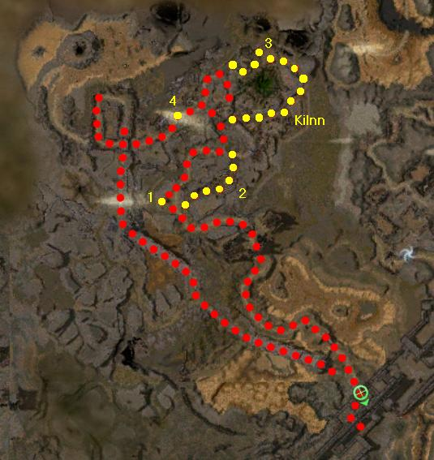

Elite: None / not listed
M1
The Great Northern Wall
◉ Mission Map

Click to enlarge · Local cache · Wiki
Summary (click to expand)
It has been too quiet lately. Go past the wall and find Bonfaaz and his army. Try to find out what they are up to.
Region: Ascalon · Mission: 1 of 25 · Type: Cooperative
✓ Objectives
Scout for Bonfaaz Burntfur's Charr forces.
- Search north of the Wall to find the Charr army.
- Report your findings to Captain Calhaan.
- ADDED: Find a new way back. Run to the Wall.
- *BONUS* Recover the four pieces of Kilnn Testibrie's armor and return them to his tomb.
→ Walkthrough
- Talk to Captain Calhaan to open the first gate.
- Head outside the gate and travel to the northwest. Eventually you will reach a gate, opened by the lever next to it.
- Continue along the path to a fork, where you will see a pile of wreckage. Interact with this and pick up Kilnn Testibrie's Crest - all 4 pieces of his armor are needed for the bonus.
- Follow the eastern path to another pile of wreckage, where you will find Cuisse.
- To the north, a large group of Gargoyles is fighting some Grawl. You can wait until the fight is over, attack immediately, or simply run past them. If you run past, beware that the Shatter Gargoyles have Imagined Burden, and in Hard Mode, Crippling Anguish.
- After the bridge, take the left path to find Greaves. Then turn back and head north-east to find Pauldron. Continue along this path to meet Kilnn Testibrie, and give him his armor to complete the bonus.
- Return to the south-west path, and after a group of Charr with a boss, there is a cinematic. After the cinematic many Charr will be chasing you. Run south to the wall and inform (talk to) the Captain of the incoming invasion. Do not stop at all along the way, or you will be giving the Charr time to catch up to you. If the Charr do get close, just keep running - only one player needs to reach the Captain.
★ Bonus
See walkthrough and objectives for bonus details (if any).
◆ Hard Mode
Skip the cinematic and use a movement speed increasing skill (such as Fall Back!) or a speed boost consumable. In hard mode enemies move 33-50% faster, so with default running speed the second group of Charr catches up with you before you reach the soldiers. If you run with heroes/henchmen, flag them in the path of the Charr so that their sacrifice can earn you a bit more time.
☠ Bosses & Elites
Elite: None / not listed
Elite: None / not listed
Elite: None / not listed
Elite: None / not listed
Elite: None / not listed
Elite: None / not listed
Elite: None / not listed
Elite: None / not listed
Elite: None / not listed
Elite: None / not listed
Elite: None / not listed
Elite: None / not listed
✦ Tips & Notes
Skill recommendations
- After completing this mission, the party will appear in Fort Ranik.
- Purple-pink waterish liquid inflicts negative environmental effect Tar.
- After the first cinematic, take care to stay on the correct path (i.e. the bridges). If by choosing the wrong one, you will not know until you are just opposite the gate, and by then, it is too late - the Charr will have beaten you there.
- Unlike other quest items, Testibrie's items can be salvaged and sold.
- Completion of this mission in Hard Mode will fill in page #2 of the Young Heroes of Tyria storybook.
- Since no foes are required to be killed, this mission and the bonus can be completed by running.
- High-level parties can fight through the mob of Charr instead of running; however, the mission timer will still tick down and eventually kill the party, thus having failed the mission.
- Complete exploration of this mission contributes approximately 0.9% to the Cartographer title.
- Players can uncover large areas of the map by heading towards the source of Charr instead of running from them. There are two sections, north and west.
- To reach the northern area run past the attacking Charr after the cinematic. The area behind them is easy to explore.
- To reach the western area follow the mission path after the cinematic until you see a group of Charr running towards you from the right. Follow that path. It will lead you to uncover a large southwestern area of the map. A running skill or a speed boost, ie. red rock candy, etc. is recommended for finishing this section on the first try.
- Players can uncover large areas of the map by heading towards the source of Charr instead of running from them. There are two sections, north and west.

Northern wall carto north

Southwestern cartography path

The ruins/ Shrine where the Searing was cast in post-Searing Ascalon.

The Shrine where the Searing spell will be cast in pre-Searing Ascalon.


Notes
- After completing this mission, the party will appear in Fort Ranik.
- Purple-pink waterish liquid inflicts negative environmental effect Tar.
- After the first cinematic, take care to stay on the correct path (i.e. the bridges). If by choosing the wrong one, you will not know until you are just opposite the gate, and by then, it is too late - the Charr will have beaten you there.
- Unlike other quest items, Testibrie's items can be salvaged and sold.
- Completion of this mission in Hard Mode will fill in page #2 of the Young Heroes of Tyria storybook.
- Since no foes are required to be killed, this mission and the bonus can be completed by running.
- High-level parties can fight through the mob of Charr instead of running; however, the mission timer will still tick down and eventually kill the party, thus having failed the mission.
- Complete exploration of this mission contributes approximately 0.9% to the Cartographer title.
- Players can uncover large areas of the map by heading towards the source of Charr instead of running from them. There are two sections, north and west.
- To reach the northern area run past the attacking Charr after the cinematic. The area behind them is easy to explore.
- To reach the western area follow the mission path after the cinematic until you see a group of Charr running towards you from the right. Follow that path. It will lead you to uncover a large southwestern area of the map. A running skill or a speed boost, ie. red rock candy, etc. is recommended for finishing this section on the first try.
- Players can uncover large areas of the map by heading towards the source of Charr instead of running from them. There are two sections, north and west.
Northern wall carto north
Southwestern cartography path
The ruins/ Shrine where the Searing was cast in post-Searing Ascalon.
The Shrine where the Searing spell will be cast in pre-Searing Ascalon.